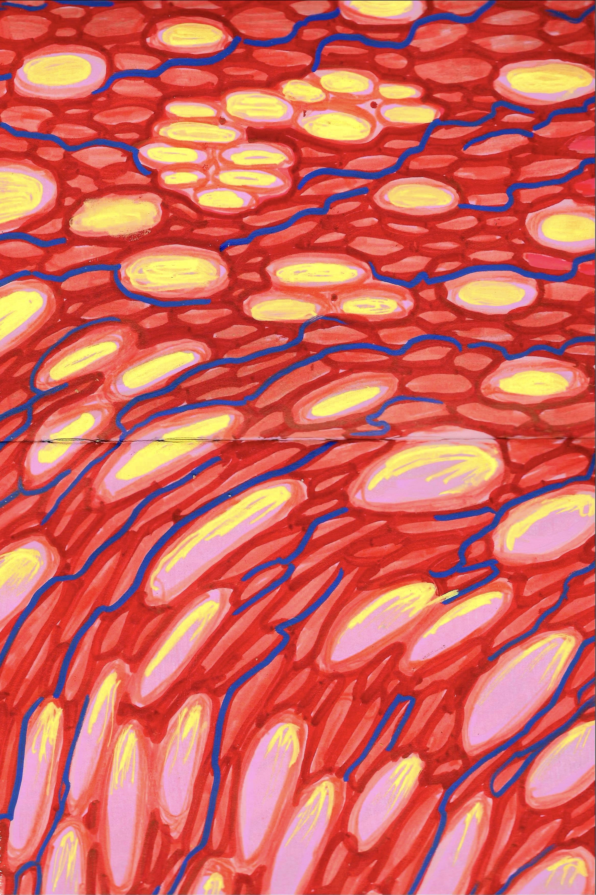
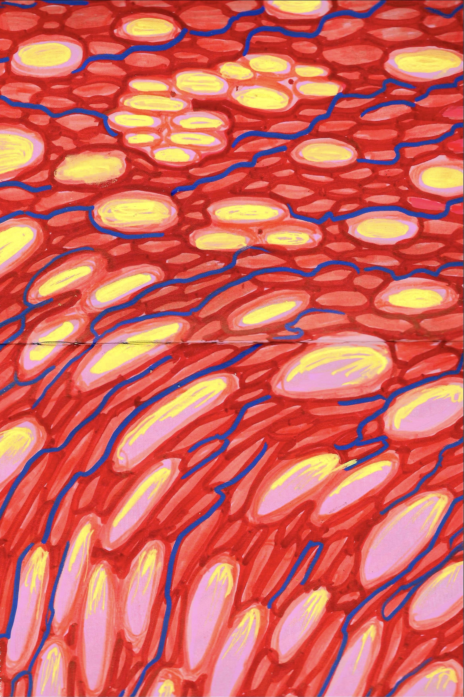

About Me
I'm Carlotta — a graphic designer from Bern, now based in Neukölln, Berlin. I combine precise craftsmanship with playful creativity. I love working with color, detail, and emotion to shape strong, thoughtful design. Whether it’s photography, illustration, or layout, I bring empathy and curiosity to everything I do.
I trained at the School of Design Bern/Biel and have experience in both design studios and hands-on creative work. I speak German, English, and French, and I believe in caring for the world and the people in it.
 
